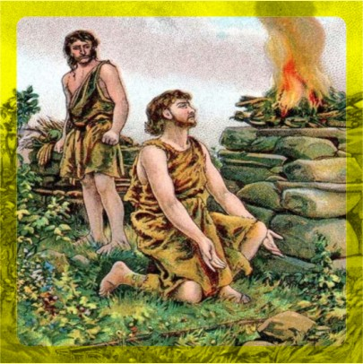
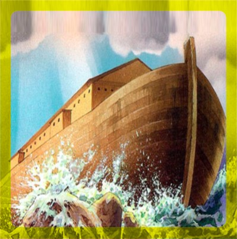

La creación del mundo
NOTA: Tenemos la concepción de que un día es un lapso de 24 horas, sin embargo la Biblia En 2da. De Pedro 3:8 nos dice: Mas, oh amados, no ignoréis esto: que para con el Señor un día es como mil años, y mil años como un día. Eso significaría que la tierra tiene de 5 a 6 mil años mas que el ser humano ya que el hombre existe a partir del 6to. día de la creación, a este periódo antes de la humanidad muchos teólogos le llaman "La Brecha", esta investigación comienza a contabilizar diligentemente a partir del 6to día, con la creación de Adán respetando cualquiera de las doctrinas teológicas que el lector tenga al respecto.
PRIMER DIA
Dios creó los Cielos, la tierra y la Luz
GENESIS
1:1 En el principio creó Dios los cielos y la tierra.
1:2 Y la tierra estaba desordenada y vacía, y las tinieblas estaban sobre la faz del abismo, y el Espíritu de Dios se movía sobre la faz de las aguas.
1:3 Y dijo Dios: Sea la luz; y fue la luz.
1:4 Y vio Dios que la luz era buena; y separó Dios la luz de las tinieblas.
1:5 Y llamó Dios a la luz Día, y a las tinieblas llamó Noche. Y fue la tarde y la mañana un día.
SEGUNDO DIA
Dios Separó la tierra de las aguas.
GENESIS
1:6 Luego dijo Dios: Haya expansión en medio de las aguas, y separe las aguas de las aguas.
1:7 E hizo Dios la expansión, y separó las aguas que estaban debajo de la expansión, de las aguas que estaban sobre la expansión. Y fue así.
1:8 Y llamó Dios a la expansión Cielos. Y fue la tarde y la mañana el día segundo.
TERCER DIA
Dios crea las plantas y los árboles
GENESIS
1:9 Dijo también Dios: Júntense las aguas que están debajo de los cielos en un lugar, y descúbrase lo seco. Y fue así.
1:10 Y llamó Dios a lo seco Tierra, y a la reunión de las aguas llamó Mares. Y vio Dios que era bueno.
1:11 Después dijo Dios: Produzca la tierra hierba verde, hierba que dé semilla; árbol de fruto que dé fruto según su género, que su semilla esté en él, sobre la tierra. Y fue así.
1:12 Produjo, pues, la tierra hierba verde, hierba que da semilla según su naturaleza, y árbol que da fruto, cuya semilla está en él, según su género. Y vio Dios que era bueno.
1:13 Y fue la tarde y la mañana el día tercero.
CUARTO DIA
Dios creó el sol, la luna y las estrellas
GENESIS
1:14 Dijo luego Dios: Haya lumbreras en la expansión de los cielos para separar el día de la noche; y sirvan de señales para las estaciones, para días y años,
1:15 y sean por lumbreras en la expansión de los cielos para alumbrar sobre la tierra. Y fue así.
1:16 E hizo Dios las dos grandes lumbreras; la lumbrera mayor para que señorease en el día, y la lumbrera menor para que señorease en la noche; hizo también las estrellas.
1:17 Y las puso Dios en la expansión de los cielos para alumbrar sobre la tierra,
1:18 y para señorear en el día y en la noche, y para separar la luz de las tinieblas. Y vio Dios que era bueno.
1:19 Y fue la tarde y la mañana el día cuarto.
QUINTO DIA
Dios creó a los animales
GENESIS
1:20 Dijo Dios: Produzcan las aguas seres vivientes, y aves que vuelen sobre la tierra, en la abierta expansión de los cielos.
1:21 Y creó Dios los grandes monstruos marinos, y todo ser viviente que se mueve, que las aguas produjeron según su género, y toda ave alada según su especie. Y vio Dios que era bueno.
1:22 Y Dios los bendijo, diciendo: Fructificad y multiplicaos, y llenad las aguas en los mares, y multiplíquense las aves en la tierra.
1:23 Y fue la tarde y la mañana el día quinto.
SEXTO DIA
Dios crea al hombre
GENESIS
1:26 Entonces dijo Dios: Hagamos al hombre a nuestra imagen, conforme a nuestra semejanza; y señoree en los peces del mar, en las aves de los cielos, en las bestias, en toda la tierra, y en todo animal que se arrastra sobre la tierra.
1:27 Y creó Dios al hombre a su imagen, a imagen de Dios lo creó; varón y hembra los creó.
1:28 Y los bendijo Dios, y les dijo: Fructificad y multiplicaos; llenad la tierra, y sojuzgadla, y señoread en los peces del mar, en las aves de los cielos, y en todas las bestias que se mueven sobre la tierra.
1:29 Y dijo Dios: He aquí que os he dado toda planta que da semilla, que está sobre toda la tierra, y todo árbol en que hay fruto y que da semilla; os serán para comer.
1:30 Y a toda bestia de la tierra, y a todas las aves de los cielos, y a todo lo que se arrastra sobre la tierra, en que hay vida, toda planta verde les será para comer. Y fue así.
1:31 Y vio Dios todo lo que había hecho, y he aquí que era bueno en gran manera. Y fue la tarde y la mañana el día sexto.
Adán
Año 0.
(3948 aC.)
GENESIS
5:1 Este es el libro de las generaciones de Adán. El día en que creó Dios al hombre, a semejanza de Dios lo hizo.
5:2 Varón y hembra los creó; y los bendijo, y llamó el nombre de ellos Adán, el día en que fueron creados.
Caín y Abel
GENESIS
4:8 Y dijo Caín a su hermano Abel: Salgamos al campo. Y aconteció que estando ellos en el campo, Caín se levantó contra su hermano Abel, y lo mató.
Nota: Se desconoce la fecha de nacimiento y de muerte de Caín y Abel.
Set
Nació en el año 130.
(3818 aC.)
GENESIS
5:3 Y vivió Adán ciento treinta años, y engendró un hijo a su semejanza, conforme a su imagen, y llamó su nombre Set.
Enós
Nació en el año 235.
(3713 aC.)
GENESIS
5:6 Vivió Set ciento cinco años, y engendró a Enós.
Cainán
Nació en el año 325.
(3623) aC.
GENESIS
5:9 Vivió Enós noventa años, y engendró a Cainán.
Mahalaleel
Nació en el año 395.
(3553 aC.)
GENESIS
5:12 Vivió Cainán setenta años, y engendró a Mahalaleel.
Jared
Nació en el año 460.
(3488 aC.)
GENESIS
5:15 Vivió Mahalaleel sesenta y cinco años, y engendró a Jared
Enoc
Nació en el año 622.
(3326 aC.)
GENESIS
5:18 Vivió Jared ciento sesenta y dos años, y engendró a Enoc.
Matusalén
Nació en el año 687.
(3261 aC.)
GENESIS
5:21 Vivió Enoc sesenta y cinco años, y engendró a Matusalén.
Lamec
Nació en el año 874.
(3074 aC.)
GENESIS
5:25 Vivió Matusalén ciento ochenta y siete años, y engendró a Lamec.
Adan muere
Murio a los 930 años de edad.
Vivio año 0 al 930
(3948-3018 aC.)
GENESIS
5:4 Y fueron los días de Adán después que engendró a Set, ochocientos años, y engendró hijos e hijas.
5:5 Y fueron todos los días que vivió Adán novecientos treinta años; y murió.
Enoc es arrebatado
Murio a los 365 años de edad.
Vivio año 622 al 987
(3326-2961 aC.)
GENESIS
5:22 Y caminó Enoc con Dios, después que engendró a Matusalén, trescientos años, y engendró hijos e hijas.
5:23 Y fueron todos los días de Enoc trescientos sesenta y cinco años.
5:24 Caminó, pues, Enoc con Dios, y desapareció, porque le llevó Dios.
Set muere
Murio a los 912 años de edad.
Vivio año 130 al 1042
(3818-2906 aC.)
GENESIS
5:8 Y fueron todos los días de Set novecientos doce años; y murió.
Noé
Nació en el año 1056.
(2892 aC.)
GENESIS
5:28 Vivió Lamec ciento ochenta y dos años, y engendró un hijo;
5:29 y llamó su nombre Noé, diciendo: Este nos aliviará de nuestras obras y del trabajo de nuestras manos, a causa de la tierra que Jehová maldijo.
Enos muere
Murio a los 905 años de edad.
Vivio año 235 al 1140
(3713-2808 aC.)
GENESIS
5:11 Y fueron todos los días de Enós novecientos cinco años; y murió.
Cainán muere
Murio a los 910 años de edad.
Vivio del año 325 al 1235
(3623-2713 aC.)
GENESIS
5:14 Y fueron todos los días de Cainán novecientos diez años; y murió.
Mahalalel muere
Murio a los 895 años de edad.
Vivio año 395 al 1290
(3553-2658 aC.)
GENESIS
5:17 Y fueron todos los días de Mahalaleel ochocientos noventa y cinco años; y murió.
Jared muere
Vivio año 460 al 1422
(3488-2526 aC.)
Murio a los 962 años de edad.
GENESIS
5:20 Y fueron todos los días de Jared novecientos sesenta y dos años; y murió.
Sem nace
Nació en el año 1556.
(2392 aC.)
GENESIS
5:32 Y siendo Noé de quinientos años, engendró a Sem, a Cam y a Jafet.
Noé comienza el arca
Sucedio 2392 aC.
GENESIS
6:10 Y engendró Noé tres hijos: a Sem, a Cam y a Jafet.
6:12 Y miró Dios la tierra, y he aquí que estaba corrompida; porque toda carne había corrompido su camino sobre la tierra.
6:13 Dijo, pues, Dios a Noé: He decidido el fin de todo ser, porque la tierra está llena de violencia a causa de ellos; y he aquí que yo los destruiré con la tierra.
6:14 Hazte un arca de madera de gofer; harás aposentos en el arca, y la calafatearás con brea por dentro y por fuera.
6:15 Y de esta manera la harás: de trescientos codos la longitud del arca, de cincuenta codos su anchura, y de treinta codos su altura.
Lamec muere
Vivio año 874 al 1651
Murio a los 777 años de edad
(3074-2297 aC.)
GENESIS
5:31 Y fueron todos los días de Lamec setecientos setenta y siete años; y murió.
Matusalén muere
Murio a los 969 años de edad.
Vivio año 687 al 1656
(3261-2292 aC.)
GENESIS
5:27 Fueron, pues, todos los días de Matusalén novecientos sesenta y nueve años; y murió.